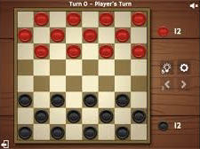

These are some of my projects
Tic-Tac-Toe

Four in a row
Calculator
Solitare
Pacman

Tetris
Facial Recognition

Checkers
Jose Maps
I am a graduating senior majoring in Computer Science. Throughout my four years at Lehman I have taken a few programming courses which include: Programmming I, Programming II, Data Structures and Algorithms. This semester I am taking two classes that require programming, these two classes are Artifical Intelligence and Programmming through Web Development. I also participated in a web development workshop at Lehman with a company called Revature. The reason why I decided to take this web development class is because I have always been interested in web development ever since I did a little of web development in middle school. I can say that since middle school I have alsways wanted to do some web development but never set the time to do it myself, so when I found this class it was a no brainer for me.
My top three jobs in no particular order are IT Support Manager, Front End Developer, and Project Manager. I am interested in starting out as an IT support specialist and then work my way up to eventually become a manager. This job is in my top list because I enjoy helping people solve their technical difficulties. I like this job because it is something that I can relate to. Any time someone in my family has any questions, problems with a device, or anything to do with technology, I am the one they call. The other top job I would wish to have is a front end developer. I know that this job has a good job outlook since people will always need websites. Another reason why I am interested in being a front end developer is because I am intrigued by what we are learning in this web development class. The last job is being a project manager. I prefer this job because I like the concept of being able to take a customers idea, then intepret those ideas, which would later be taken to your team who ultimately create an end product that satisfies the customers needs.
My six favorite foods:
My favorite movie of all time is a movie called Never Back Down. It was released in 2008 and it is about a guy who is being bullied
in his new school and decides to learn Mixed Martial Arts in order to defend himself.
Tic-Tac-Toe
Four in a row
Calculator
Solitare
Pacman
Tetris
Facial Recognition
Checkers
Jose Maps